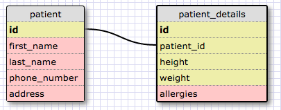

Pros and Cons of NoSQL over Relational Databases
September 21, 2014
Databases have become a very important part of how businesses operate since the beginning of the digital era. The relational database management system (RDBMS) model has been the dominant model for database management since it was first described by E.F. Codd in 1970. Relational databases use a computer language called SQL (structured query language) to store data in a series of tables that are related to each other.A simple example of a relational database model is a doctor's office that stores patient contact info in one table and the patient's health information in another table. The tables below are related because the patient's health information is linked to the patient id number.

Recently, NoSQL databases are gaining popularity as an alternative to the relational database model. NoSQL is a new class of data management designed to meet the increasing volume, velocity, and variety of business data organizations are collection. NoSQL is simply a database management system that does not use a tabular relation model.
Pros and Cons of using NoSQL:
Pros
- Better and cheaper scaling. As databases move into the cloud there is cost savings since you can spread your databases across multiple hosts rather than requiring more servers.
- Better for big data. The volume of data has increased massively in recent years. The sheer volume of data that can be practically managed by a relational database system is becoming too much to bear for many enterprises. NoSQL systems can handle the volumes of 'big data' much better than the largest relational database systems.
- Requires less labor costs for design and maintenance of data management system compared to RDMBS.
- NoSQL databases have far more relaxed data model restrictions than RDMBS. For example, its much easier to add columns in NoSQL.
Cons
- NoSQL is relatively new and it is not as stable nor fully functional as a RDMBS.
- NoSQL support is not as good as RDMBS since most NoSQL is open source and RDBMS are supported by large established companies like Oracle, Microsoft, or IBM.
- It's far easier to find experienced RDMBS programmers than a NoSQL expert. NoSQL requires a lot of specialized skill to install and maintain.